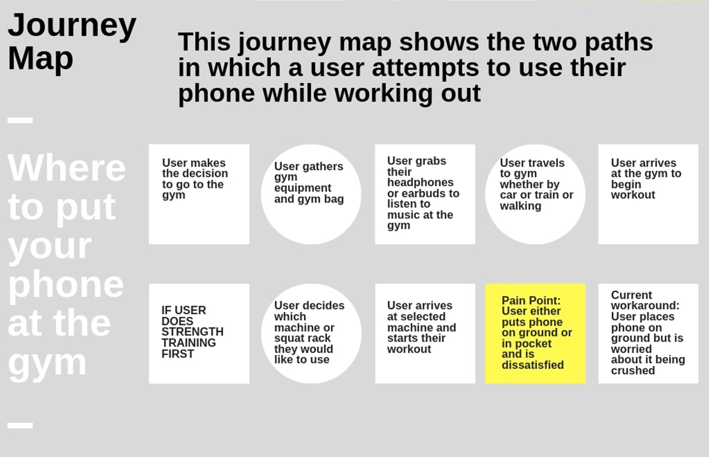

Magnetic Phone Holder
HMW: Make using a phone while weight-lifting at the gym more accessible and convenient?
Overview
MPH is a small light-weight magnetic device that clasps phones of any size and attaches it to any magnetic surface. This device takes advantage of the fact that most weight machines at the gym are magnetic. It provides a quick and easy way to store a phone in a place that is away from immediate harm, but also close enough to be within one’s reach.Project Details
Skills: Sketching, user & performance testing, prototype building
Timeline: April - June 2019
Location: Northwestern University, Evanston, IL
Team of: 4
-
1. Problem Validation
Through personal experiences and AEIOU observations, we observed people working out at on-campus and off-campus gyms. We investigated how and where gym goers place their phone while working out. Some users left their phone on the floor, others used various workarounds to store their phone as they workout or kept their phones in their pockets. In addition, we prepared surveys and interviews to dive deeper into the problem. We asked questions about:- where they placed their phones
- how often they used their phones while working out
- how satisfied they were with where they kept their phone
- what type of workout they usually did (running, weightlifting, yoga, etc.)
- what type of headphones (wired or wireless)
-
2. User Persona
Although we kept our target user group wide, surprisingly many of our users were between the ages of 18-24. Our survey and interview results showed us that weightlifters were having more problem with phone placements. Thus, we narrowed our user group as weightlifters between ages 18-24. After analyzing the results and responses of our surveys and interviews, we highlighted some key patterns and developed a user persona. -

3. Journey Map
We created a journey map to further understand the steps users followed in the gym while using their phone. -
4. Key Product Requirements
We researched existing solutions as well as existing patents, and created a table with product names, brand, price range, strengths, and weaknesses. This allowed us to hone the key requirements of our product.
We identified the key product requirements as:- 1. Safe to use for the user’s mobile device
- 2. Unobtrusive to the user’s workout
- 3. Comfortable for the user
- 4. Easily accessible to the user during the workout
- 5. Stable
- 6. Light weight
- 7. Easy to remove
- 8. Durable to mishaps
- 9. Adjustable to various machines
-
5. Ideation
Attached Clip: This idea was for the people to attach their phones on their clothes by securing the phone with a clip.
Phone Hanger: The hook of the design attaches to squat racks, which have thick columns and large circular holes equally spaced on columns.
Phone Box: For machines that have horizontal poles, the band attached to the rectangular chase could be wrapped around the pole.
Magnetic Popsocket: One part of the pop socket attaches to the phone while the other part sticks to the magnetic surface found in most weight lifting machines. -
6. 1st Round of Prototypes
Hook Support: 3D printed semicircular part was designed to hold the two short sides of the phone. The phone was designed to lay horizontal while the hook grabbed a hole or edge on a machine.
Strap Support: This prototype was made out of sheet metal, velcro, and black strap. The strap goes around a vertical pole and adjusted according to the width of the pole. The phone can be placed horizontally or vertically.
Magnetic Support: Instead of manufacturing a popsocket, we created an attachment that could slide onto a popsocket. This 3D printed prototype was designed to attach to a popsocket on one side and have a magnet on the other side. -
7. Perfomance & User Testing
Hook Support:
(-) Due to its fragileness, the prototype broke down before we could test it with the users
Strap Support:
(+) It was adjustable to any column and allowed the phone to be placed horizontally or vertically.
(-) It was stable only 60 percent of the time we tested it.
(-) Users found it inconvenient.
Magnetic Support:
(+): Magnets could hold the phone steady and phone calls could be placed comfortably.
(-): People didn’t entirely trust magnets because of their lack of stability. -
8. 2nd Round of Prototypes
Using neodymium magnets for stronger attachment and micro-suction cup tape for temporary attachment of the magnetic device to the phone, we created our second round of prototypes. We found out that magnets rapped in electrical tape functioned better than magnets in 3D printed PLA. The prototypes are arranged from oldest to newest from left to right.
Ultimately, we decided to user test with the magnets wrapped in black electrical tape and covered by micro-suction cup tape on both sides. It was a simplistic design that looked more aesthetically pleasing. -
9. Final Deliverable
From our user testing, I found out that the stability we were looking for was not present as a result of the weaker force between the phone and the device compared to the magnetic force between our device and the workout machine. Going back to earlier prototypes, Hook Support and Strap Support, I decided to incorporate a clamp feature.
Ultimately, the user test displayed that aesthetically, the micro suction prototype was preferred because it was smaller. However, the clamp prototype was more secure, gave a better sense of security to the users, and provided auditory feedback while attaching to a surface.
Result
Through 13 prototypes and many user and performance testing,
we created a final product that gave users the freedom to attach phones of any size to a workout
machine without worrying about their phones being damaged.
The users can easily customize the position and location of their phone while weight lifting.